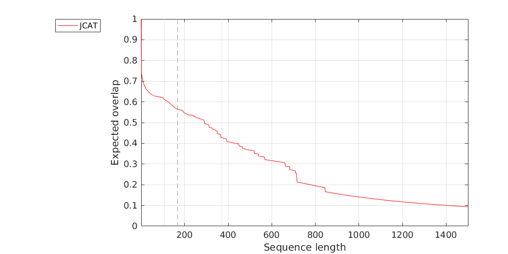
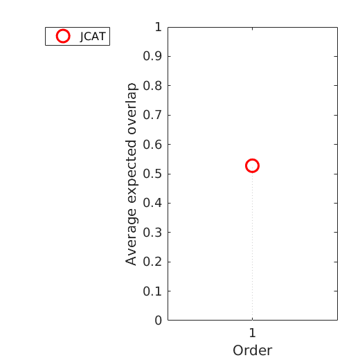

Expected overlap analysis
Experiment baseline

Expected overlap curves for baseline

Expected overlap scores for baseline
Overview
Scores calculated as an average over interval 108 to 371
all
JCAT
0.5274